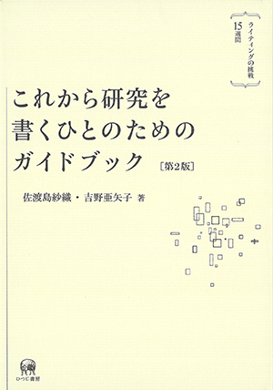
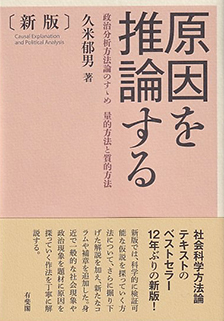
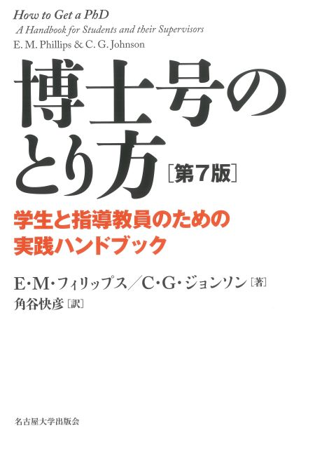

(卒論・修論のための) 研究計画書の書き方
念の為に最初に述べておきますが、これから (はじめて) 学位論文を執筆するという学部生や修士の大学院生向けの内容です。科研費申請書の書き方でも、Ph.D 出願書類の書き方でもありません。
2025年8月 追記
先日、大学院の仲間と共同で主催している勉強会で研究報告会がありました。その際に開催したワークショップにおいて、同じテーマで報告を行ったので、その時のスライド資料もおいておきます。
すべては研究計画書 (Research Proposal) からはじまる
大学院に入学して (研究室に入って) 最初にすることは、研究計画書を書くことです。実際には大学院入試のときに提出のために書くのですが、後述する理由から、ふつうは提出したものから大きく内容が変わってしまいます。
「計画書」という名前から、研究計画書は、研究のスケジュールや見通し、現時点で研究者が考えていることをまとめたメモのようなものであると考える方がいるかも知れません。しかし実際には、英語の Research Proposal のとおり、研究を他者に売り込むことが目的です。日本語では、企画書とか提案書とかのほうが適訳でしょうか。そのため、研究計画書に書いてあるべきことはある程度決まっており、そのフォーマットに従い、自分の研究の内容と面白さを完結に伝えることが目的となります。
この記事では、これから研究を書きはじめる人のために、私が所属する研究室である程度テンプレート化された「研究計画書」の書き方を解説します。なお、より詳細な書き方については、学部生向けに開講されている「国際関係研究の方法」みたいな授業や、大学院科目のアカデミック・ライティングとかリサーチ・メソッドのような名前の授業を受講してください。
卒論・修論の計画書は変わる
大学院の入試のときに提出した研究計画書の内容から、一切の変更なく修士論文を執筆して提出できる人はいるのでしょうか。私には想像がつきません。大抵の場合、ゼミや授業で報告を重ね、他者からコメント・アドバイスをもらっていく過程で、方針や方法論などが変わっていくものだと思います。したがって、大学院 (特に修士課程) では、最初の半年～1年間をかけて研究計画書を執筆することがあります。言い換えれば、卒論・修論の執筆初期の段階で完璧な研究計画が立てられる人などまずいないということです。
卒論・修論のための研究計画書は常に改訂し続け、「現時点で最新の研究計画書」として執筆することになる点で、少し特殊な例かもしれません。ただし、研究計画書のフォーマットや内容に関しては同じですので、記事の内容は妥当するはずです。
研究計画書の目的
記述のとおり、研究計画書は自らの研究を他者に紹介する書類です。想定される読者は、入試の面接官や審査員、あなたの指導教員やゼミの仲間、研究を相談しようとする先生などが考えられます。その読者に対し、あなたの研究がいかに興味深く、また現実的に執筆可能であるかを伝える必要があります。常に読者がいることを意識して執筆することが重要です。
逆に言えば、その目的を達成するために必要な情報だけが記載されていればよいです。あなたの頭の中にある様々な思考や知識は、学位論文に書けばいいのです。具体的に言えば、学位論文 (卒論・修論) のために日本語で執筆する研究計画書は、参考文献リストを除いてA4サイズで3～4枚程度で十分です1。
また、先行研究をたくさん紹介することも目的ではありません。もちろん、「この分野の既存の研究にはきちんと目を通しています」ということをアピールする意味では、先行研究に触れて適切に引用することが必要です。しかし本当に重要なのは自分の研究を紹介することです。そのため、先行研究の説明よりもむしろ、自分の理論や仮説の説明に多くのスペースを割くことを意識して書くとよいでしょう。簡単に言えば、他人の研究を親切に紹介して上げる必要はないということです。
卒論・修論の序章にもなる
研究計画書は、自身の研究の根幹となる情報が簡潔にまとめられている書類です。これは、研究論文でいうアブストラクトに当たる部分であり、卒論・修論では序章がそれに該当します。したがって、あなたが改訂し続けた研究計画書は、最終的にあなたの学位論文の序章としてほとんどそのまま執筆することができます。あなたの学位論文を読む人が、序章を呼んだだけであなたの研究をなんとなくイメージし、さらにおもしろいと思ってもらえることが重要です。
ただし、研究計画書が一字違わずそのまま序章になるわけでないことに注意が必要です。計画書の段階では書けないこと (研究の結果や含意) もありますし、序章においては論文の構成をまとめた項目も必要になるためです。
研究計画書に書いてあること
人や研究室によって順番や内容に多少の差異はあれど、研究計画書に書いてあるべき情報はほとんど同じです。2 各項目をクリックすると、その部分に飛ぶことができます。
それぞれ解説します。
素敵なタイトル
研究計画書のタイトルは(特に指定がある場合を除いて)、「研究計画書」とするべきではありません。すでに述べたとおり、研究計画書は研究者のメモや保存用のノートではなく、他者に研究を売り込む提案書です。そう、タイトルの段階であなたのプレゼンは始まっているのです。
研究計画書のタイトルは、論文全体の内容や主張がわかるようにつけましょう。場合によっては、あなたの論文のタイトルにそのまま採用されるようなタイトルが望ましいです。必要があれば副題を付けてもよく、主題と合わせて効果的に研究内容を伝えられるような素敵なタイトルを考えてみてください。ちなみに、英語の論文は主題と副題をコロン (:) で結びますが、日本語では副題を em ダッシュ (—) で囲むことが多いようです (少なくとも私はそうするよう指導されました)。
研究の問い
研究の問いとは、その研究の核心をなす問いのことです。前提にあるのは、研究とは問いから始まり、それに答えるものであるという姿勢です。実際に、最近読んだいくつかの論文を思い出してみると (またはアブストラクトを読み直してみると)、最初に本研究が取り組む問いを明示しているはずです。
研究の問いを立てる際、パズルを意識すると立てやすいです。パズルとは、既存の知と実際の社会現象との間に存在する矛盾のことです。このパズルを解決することが、研究の一つの目的です。これまで学術界 / 社会が生み出してきた知 (常識、先行研究の合意、直感) に反する社会現象に対し、その矛盾はなぜ生じるのかを問うことが、社会科学研究における重要な出発点であると言えます。研究の問いの立て方について、ここでこれ以上詳しくは述べません (詳しく知りたい方は、各種テキストなどを参照してください)。重要なのは、研究は問いに対する答えの追求であるということを、一貫して意識しておくことです。
研究の問いにはいくつかのスタイルがあります。中でもよく用いられる区別が、Why Question と How Question です。前者は、独立変数 (原因) と従属変数 (結果) の間に見られる因果関係に着目し、独立変数自体や因果メカニズムを特定する理論構築を目的として行われます。例えば、「なぜ民主主義国家同士は戦争しないのか」などがわかりやすい例でしょうか。一方 How Question とは、現状を分析して記述したり、過程を詳細に描き出したりするときに使われます。例えば、「日本はどのようにして超超高齢社会に突入したか」などが挙げられます。
いくつかの研究室では How Question に基づく研究や政策提言型の論文を修士論文として認めない場合があります。こればかりは指導教員の方針ですから、必ず確認するようにしてください。
研究の背景
研究対象が特定の地域であったり、一般的に有名でない社会現象であったりする場合、研究の背景に関する説明がある方がよい場合があります。その場合、読者の理解を深めるためにも、具体例を用いて研究の背景を説明するとよいです。
ただしこの場合、次のことに気をつけてください。すなわち、背景の説明は、研究の問いを提示したあとに行うことです。事例の紹介を (長々と) 行ったあとで、問いを提示している計画書やプレゼンテーションをたまに見かけますが、この方法は読者フレンドリーとは言えません。たしかに、あなたの思考の順番でいえば、特定の事例について調べていくうちに研究の問いを思いついたと思います。しかし読者はむしろ、問いを前提として具体的な背景を理解しようとします。優れた文章が結論を先に提示するように、研究の背景も問いのあとに続くように配置しましょう。
研究の意義
研究の意義とは、本研究が学術界や社会に与える貢献のことです。大きく学術的意義と政策的意義 (社会的意義) に分けられます。いずれも、(1) なぜこの問いに答える必要があるのか、(2) これまでの先行研究 / 社会実行では不十分な点、(3) あなたの研究がもつ新しさ (新規性) や面白さを提示する場になります。
理論と仮説
この節では、あなたが研究において妥当性があると考えている理論と、そこから導かれる検証するべき仮説を提示します。極めて単純化すれば3、理論とは原因と結果に関する因果関係やメカニズム、仮定などの集合をいいます。一方で仮説とは、理論が正しい場合に当然導かれる、観察可能で具体的な現象をいいます。
科学の究極的な目的のひとつは、より広い現象をより一般的な理論で説明することといえるかもしれません。国際関係研究で主流な理論 (たとえばリアリズムやリベラリズム) は、国家間の関係についての現象 (戦争、平和、協力、……) とその原因に対して包括的な説明を与えることを目的としています。その意味で、あなたの研究は、その分野における現時点で最も説明力が高く包括的な理論を主張することが求められます4。それは、あなた自身がこれまでの理論を改良して作った新しい理論であるかもしれませんし、これまでに提出されてきた理論のうち、最も妥当性の高いものを決定するのかもしれません。
したがってこの章では、(1) あなたの提示する / 支持する理論の説明、(2) その理論が妥当だと考える理由、(3) それ以外の理論では不十分な理由、(4) その理論が正しい場合に観察されるべき仮説の4点を明確にする必要があります。仮説は、言い換えれば現実世界の予測です。他の理論では予測できないが、その理論では予測できるという仮説を提示することが、理論の妥当性を検証するという意味において重要です。あなたが提示し、仮説を導き、正しさが検証された理論は、後の誰かの研究によって反証されるまでは正しいことが保証されます。すなわち研究とは、理論を精緻化していく過程と捉えることもできます。
仮説についていくつか補足します。第一に、仮説は次のような型を持っていることが望ましいです。すなわち、「独立変数の値が大きくなる (小さくなる) とき、従属変数の値が大きくなる (小さくなる)」というように、独立変数の変化に対する従属変数の変化の様子を記述していることです5。これは、理論が原因と結果に関する因果関係を主な対象としていることからの要請です。ただし、一般化された理論というよりも、特定の事例についての限定的な仮説を提示する場合はこの限りではありません。
第二に、仮説を複数立てる場合があります。その理由は様々ありますが、一般的には (1) 競合する仮説 / 理論 を提示し、自分が支持するものだけが正しいと検証されることにより、提示する理論の妥当性を主張する場合、または、(2) 提示する理論からいくつかの仮説が導かれるために、それらをすべて提示する場合が多いです。(1) の場合は、自身が正しいと考える仮説以外の仮説を「対抗仮説」などと呼んで区別し、検証により対抗仮説を棄却して自分の仮説の正しさを主張します。(2) の場合、仮説の間の関係性に関する説明が必要です。特に異なる独立変数が設定されている場合、どの独立変数が最も重要であるのか、独立変数同士の関係はどうなっているか、などの説明をします。もちろん、必ずしも仮説を複数用意する必要はありません。検証のしやすさや主張の内容によって柔軟に対応するべきことであると思います6。
最後に、理論は妥当性とともに限界を持っているはずです。この理論の説明の射程範囲をスコープ・コンディション (scope condition) といい、理論を提示する場合にはこの射程範囲も説明する必要があります。これは、理論の提示の段階でわかっているのであれば、研究計画書にも書くとよいでしょう。理論に一定の仮定を付する場合などがこれに該当します。理論の射程を明示することにより、その研究が対象としている社会現象の範囲や、理論の一般化可能性に関する議論を明らかにすることができるためです。一方、検証の過程や議論の結果存在すると発見された限界については、論文の終章 (結論) の部分に書くのがよいです。
研究の方法 (リサーチデザイン)
前の項目で提示された理論及び仮説は、科学的な方法に基づいて検証される必要があります。この章では、その検証の方法について説明します。リサーチデザインの章では、以下の要素を説明するとよいです。すなわち、(1) 仮説の独立変数と従属変数はどのように操作化されるのか、(2) どのようなデータに基づいて検証を行うのか、(3) どのような方法論を用いて検証を行うのか、です。
第一に、仮説はその時点では一般的な言葉で書かれている場合がほとんどです。独立変数や従属変数は、「民主主義度合い」とか「国家のパワー」、「議会での発言」とかいった言葉で表現されています。これらを、実際に観察することができる基準に定義し直すことを「操作化」といいます。民主主義度合いは、「選挙が行われているか」とか、「報道の自由が確保されているか」とかで観察することができますし、国家のパワーは軍事費 (米ドル) などで観察できるかもしれません。議会の発言は、具体的にどの議会におけるなんという言葉の出現であるかを説明する必要があります。なおこれらの操作化は、先行研究によって定義されているものをそのまま援用する場合はその旨を明示します。民主主義度合いについて Polity 5 を使ったり、国家のパワーとして Correlates of War の National Material Capability を用いたりする場合などです。
第二に、検証に用いるデータはすべて列挙します。定量分析でも定性分析でも同じで、上記のような数値的なデータだけでなく、議会の議事録や新聞、政治家の発言、公文書などがデータにあたります。どのようなデータに基づいて検証を行うつもりであるのかを説明することは、その研究の実現可能性や妥当性の評価に直接つながりますから、必要なことであるといえます (さらにいえば、その分野についてもっとよいデータがあれば、それを教えてくれるかもしれないという意味でも、今知っているデータを書いておくことはよいことです)。また、計量分析を行う場合、データの期間や地域に関する説明も必要です。データの取得可能性から地域や期間が限定されるのであれば、検証に影響がないかを説明します。事例分析を行う場合は、事例選択の理由を述べる必要があります。
第三に、用いる方法論も提示しておくのがよいです。計量分析であれば、使うモデルの名前を挙げます (線形回帰分析、生存時間分析、量的テキスト分析など)。質的な分析であれば、やはり方法の名称を挙げます(過程追跡法、比較事例分析、整合性検証など)。なぜそのような方法論を用いるのかについての説明も必要でしょう。特に、その分野であまり採用されないような方法論を使うような場合は、一般的な方法論と比較して優れている点を主張しなければ、「単に回帰分析すればいいのでは」などとコメントされてしまいます。その意味でも、各方法が持つ方法論的特徴・利点についてはしっかりと勉強しておきたいです。
なお、リサーチデザインの作り方及び書き方については、各種方法論のテキストに細かく書いてあることがほとんどです。それらはある程度はフォーマット化され、何を書くべきかが明確に定まっています。そのため、テキストに従って執筆するのが最もよいと考えます。
参考文献リスト
本文で引用した文献は過不足なく参考文献リストに掲載します。これは言うまでもなく剽窃を防止するためであり、統一されたスタイルにって文献情報を正しく引用する場合があります。引用の方法についてはここでは詳しく述べませんので、各種テキストや資料を確認してください。
APA スタイルでの引用方法をまとめたページも作っています。もしかしたら参考になるかも。
ただし、よくある質問のうち重要であると思われるもののみ、限定的に説明しておきます。
- 参考文献は、著者の (ファミリーネームの) アルファベット順に並べるのが一般的です
- 他の分野では、引用順に 1, 2, … とつけることもあります
- 日本語文献と英語文献は分けてリストにすることが多いです
- 参考文献リストは、読みやすさのためにぶら下げインデントを使うことが多いです
- 脚注に完全な文献情報を記載する方法を使っていても、改めて参考文献リストを付するほうがよいです
- もちろん、論文本文に関してはこの通りではありません
これとは別に、引用はしていないが参考にした、勉強に用いた、これから読もうと思っている文献を一覧にしておくことがあります (ゼミの報告資料や、相談のための資料に限ります。申請書などでは許されません)。これらは、参考文献リストとは分けてリストを付してもよいでしょう。あなたがこの分野についてどれだけの先行研究を確認しているかを提示することで、他者があなたに対してアドバイス・コメントしやすい場合があります。
おすすめの文献
以下では、研究を始める際に参考になるかもしれない文献をいくつか提示します。筆者のおすすめというだけです。
これから研究を書くひとのためのガイドブック

佐渡島紗織・吉野亜矢子. (2021). 出版社のサイト
タイトルのとおり、初めてアカデミックライティングをする人のために、要点が簡潔にまとめられた入門書。文章の書き方から問いの立て方、資料の集め方まで優しく説明されている。アカデミックな文章とは何かを勉強する最初の本としておすすめ。
政策リサーチ入門

伊藤修一郎. (2023). 出版社のサイト
政策提言や評価を最終的な目的として、科学的な研究を行う方法を基礎から解説している。シンクタンクや国連・政府関連の政策立案に携わりたいと考えている人におすすめ。また、リサーチ内容をわかりやすく人に伝える方法についての説明もあり、かなり丁寧だ。
原因を推論する (新版)

久米郁男. (2025). 出版社のサイト
社会科学研究の方法に関する日本語のバイブル。このページでも説明した理論とか観察、変数などの言葉についても深堀りして説明されている。若干古い印象があるが、科学的な研究とはなにかについて考える重要な材料がまとまっている。大学院生になってものを書くようになったら、必ず一度は読みたい。
博士号のとり方

E.M.フィリップス・C.G. ジョンソン. (2025). 出版社のサイト
博士号取得を目指す大学院生向けに、研究者としての指針を示している。研究の型や指導教員との付き合い方などの章は、修士課程学生にも参考になる(と同時に、博士課程への進学に悩んでいる場合にその実態を知る手がかりになるかもしれない)。
脚注
余談ですが、日本の公的研究資金で最も有名な科研費 (科学研究費助成事業) の応募の際にも研究計画調書を提出します。この書類の「研究目的、研究方法など」の部分がこの記事の研究計画書にあたり、種別にもよりますがいずれも 4～6 ページを上限としています。(科研費公募情報)↩︎
フィリップス & ジョンソン (2025) は、研究を大きく「探究型研究」、「検証型研究」、「問題解決型研究」に分類しています。そのうえで、博士論文には検証型研究が適していると述べています。そのため、このページでも、検証型研究を行うことを前提とした研究計画の書き方を提案します。↩︎
大学院では「理論とはなにか」とか「仮説とはなにか」(さらに言えば、科学的な研究とはなにか) ということを考える時間があります。ただ、ここでは到底検討が及びませんので、触れません。おすすめ文献として紹介した「原因を推論する」は、この点の議論も扱っています。↩︎
すでに述べたとおり、これは「検証型研究」に求められているものです。他の型の研究においては、求められているものも異なってくる場合があります。↩︎
この点、独立変数と従属変数の関係が決定論的であると考える場合は、「～のとき、～になる」と表現し、確率的であると考える場合は「～のとき、～になりやすい」とか、「～の傾向がある」などと表現します。↩︎
計量分析や数理モデルを方法論として採用している論文では、仮説の数が3，4個……と多くなる傾向にあるように感じます。これは、統計的な分析が複数のモデルを一度に扱いやすいことなどに起因していると考えられます。この場合でも、仮説の間の関係性や因果効果の大きさに関する議論が必要であることには変わりありません。↩︎